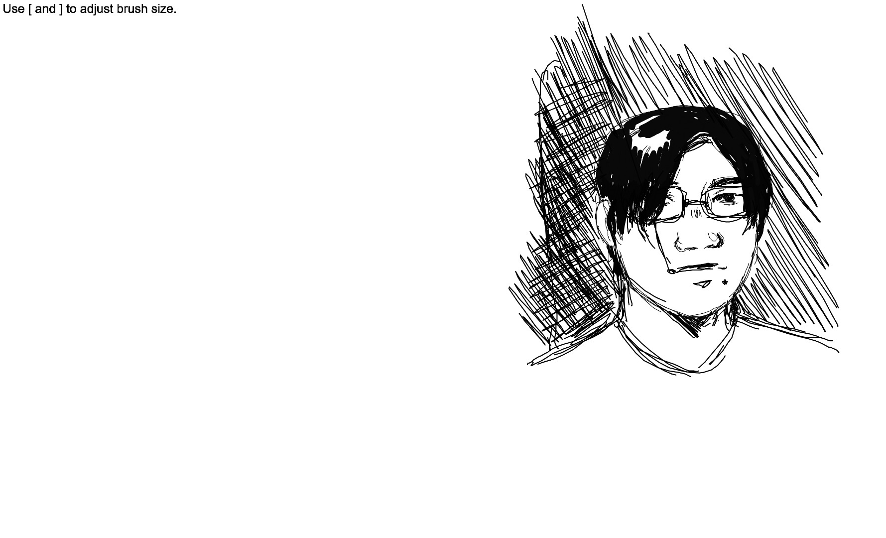

let's go!
I have never used p5.js before this, although I have studied some elements of
Javascript canvas programming in passing. I'm interested in ways I can apply this to my site; one
inspiration
I've found is a Vintage Star System
Generator, which
generates names and details about a fictitious star system and fits with the theme of my site.
I experimented with generating a word cloud after the live coding demo in this week's workshop using
the random() function. I plan to do more research on p5.js's capabilities to improve upon this
sketch.


p5.js self portrait
To create a self-portrait in a p5.js sketch, I wanted to forgo shape generation entirely and instead code a rudimentary art program that I could control more precisely. This let me experiment with functions such as mouseisPressed().
A link to the sketch.  BACK